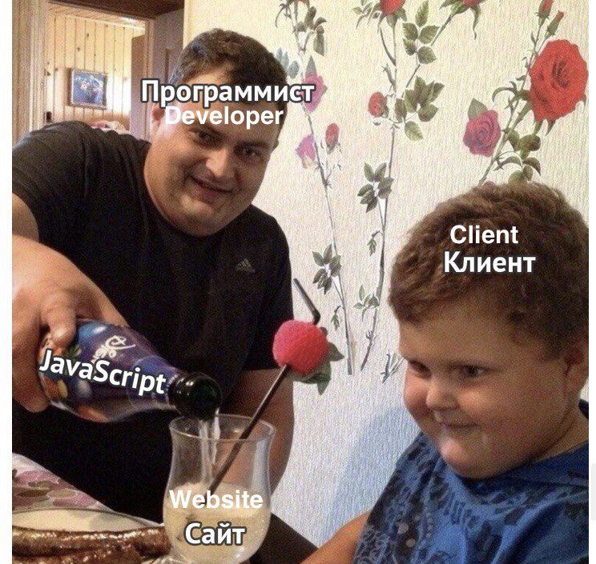

So, the New Year holidays are sadly over 😢 and now it’s time to work! How hard it is to kick myself out from the confortable but self-descructive realm of procrastination right into the arms of workaholism! Working all the day long seemed so distant and vague, almost like a scary dream 😴. But it wasn’t a dream. I should stop whining, afterall, work is ennobling 🙉🔨. And so, Merry Christmas and a happy new project to me! 🎅
📆 Monday, 1st of January, 2021
⏰ 09:00
Well, this is going to be a very loooong day… . I think, I will keep lookig at my watch every half an hour. Why is it Monday 😔? The first day after holidays this long should never be Monday! That’s cruel and counterproductive! I object!
⏰ 09:01
I guess, the dinial phase is over and now it’s time for a anger. I am not that kind of person, so, I will skip the anger part and leap right to the bargaining. How about I just start with some small and simple tasks before I get on the wheels? I think I’d better start with reviewing my pending tasks, last year’s leftovers. Hm, mobile assessment methodology and lecture material preparation on that topic. Ok, what else? Seems too still, since the last project was closed on the 30th of December and there were no updates since then. I will probably write to my chef Andrew, and ask whether there are any alternatives. Good bargaining could save me from the next stage 😊.
Hm, looks like Andrew has started his day a little earlier (oops 😬): calling on the mobile. Well, there we go! Oh, the god of new projects! Let this one be nice!
[…Several minutes of how-do-you-do and happy-new-year things…]
- How hard is it? - I tentatively asked. - Well, do you remember the project M?
Of course, I remember that project M!!! How can one forget THAT amount of JS code falling on your head until you choke and die? It was like walking on heels on the sand. I also recalled a picture I had shared in a fit of righteous desperation with my collegue with whom I had been working on that project:

- Yes, sure, - was my brief and eloquent reply instead.
- That one was medium hard, this one is just hard, - was the answer of my chef and mentor. Trying to imagine what sort of project that might be, would have made my head explode. But thankfully I am getting heebie-jeebies outside at -10C. Yeah, it’s the famous Russian winter, yo, let the fittest survive, go evolution! I’m done (I little spoiler, as I found later, that was a reasonable concern). Hm, I would not call that project M actually hard, more huge than hard. And quite daunting since the was also something getting wrong on the project: account blocked, or web site hanging (not our fault, of course 🙊). - This is one is about a 3D secure protocol implementation, assessment of an e-commerce service of bank A.
Oh my… . I’ve never ever had such tasks. I usually had something more familiar like a website or a mobile app. Yes, they are usually very different (though some of the vulnerabilities are often the same), but this one is neither. But I know almost nothing about 3D secure… . And A. said that this one is of high level of difficulty. So, it’s something I am not an expert at and moreover it’s a very difficult project. A very good start of the year! A. definetely knows how to encourage engineers to put themselves together after more than a week of tiresome (let’s be honest) indolence!
I need to collect more information about this protocol, more technical details, I mean. I think this is a 2 hours task, take or give.
⏰ 11:11
Ha-ha! Several hours? Really? It seems that no one really knows what that is exactly. Information on one website contradicts the information from another. Which one is wrong? Could be both? I would have started becoming a little nervous by now if I weren’t so sluggish after these holidays. I should probably keep some notes along the way… .
⏰ 13:34
Well… . My child is about to be born! Not the human one, text-based one. I think this thing deserves a separate article (here). This is just too much for a blog post. It turned out to be a little research, to be honest, with dozens of articles read, several videos watched and even one presentation scrolled. It’s like a ball 🧶 of human hair, cat fur and some other “ingredients” I prefer not to mention.
Don’t get me wrong, I am happy with the task even more! Finally, I am getting a project that sounds promising for my self-development, something that’s going to add to my knowledge base beyond the usual “What info is being leaked through logs?” or “One can bruteforce the OTP, OMG!".
So, cool. Let’s get started.
📆 02/01/2021, Tuesday
⏰ 13:34
I’ve learned something about this thing already: it’s not a piece of cake 🍰! So many requests and responses exchanged, so many parties might be involved, so little consistent infomation across the Internet… . But the overal picture is starting to show up nicely. I’ve dedicated a whole article for that, so, I won’t be describing too much here, but some short intro is due (might be a refresher for some).
There are three domains involved (not neccessarily three parties): acquirer (the one that gets the money 💰), the issuer (the one that gives that money 💰) and the interoperability domain (the one who makes it happen). I would like to draw a little bartender analogy. Imagine a city of drunkards 🍺. There are lots of people who a willing to give money for a nice and decent pint of ale. There are also a couple of breweries out there that are willing to support this town in its continuing quest to drunkenness. But how do they meet? Where? That’s why northern gods invented bars and bartenders! In this analogy, the latter will be our interoperability domain, drunkards - the issuer and customers and the breweries are the acquirers.
There are also a couple of bars in this town that are willing to sell.
So, this PaReq and PaRes are, let me repeat, url-zip-base64 encoded? And I am supposed to decode them each time manually? Substitute the values and fields to check and then base64-zip-url encode back? Do you think I am so hopeless? I am sorry, but it’s far too daunting a task and I am sure I was born for greater things. I will let Python 🐍 do this dirty and job. After all, why have we invented computers? Yes, I will just need a small script… .